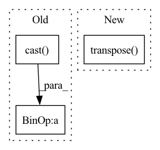

Pattern ID :41741
Before Change
key_dim = make_divisible(cc * key_dim, divisor=8) // num_heads // regard as key_dim_ratio
else:
key_dim = cc // num_heads // Default value
qk_scale = float(1.0 / tf.math.sqrt(tf.cast( key_dim, "float32") ))
out_shape = cc if out_shape is None else out_shape
emb_dim = num_heads * key_dim
kv_kernel = block_size + halo_size * 2After Change
// print(f">>>> {attn_query.shape = }, {key.shape = }, {value.shape = }, {kv_inp.shape = }, {pos_query.shape = }, {num_heads = }")
// attention_scores = [batch, num_heads, hh, ww, query_block * query_block, kv_kernel * kv_kernel]
// attention_scores = layers.Lambda(lambda xx: functional.matmul(xx[0], xx[1], transpose_b=True))([attn_query, key])
attention_scores = attn_query @ functional.transpose( key, [0, 1, 2, 3, 5, 4])
// pos = [batch, num_heads * hh * ww, query_block, query_block, kv_kernel, kv_kernel]
pos = RelativePositionalEmbedding(position_height=kv_kernel, name=name and name + "pos_emb")(pos_query)
// print(f">>>> {pos.shape = }, {attention_scores.shape = }")
pos = functional.reshape(pos, [-1, *attention_scores.shape[1:]])In pattern: SUPERPATTERN
Frequency: 3
Non-data size: 3
Instances Fragment ID: 117016731
Project Name: leondgarse/keras_cv_attention_models
Commit Name: e05e233f369a1d58f912872b1581a80d15cacc3f
Time: 2023-02-07
Author: leondgarse@gmail.com
File Name: keras_cv_attention_models/halonet/halonet.py
M Class Name: AnonimousClass
N Class Name: AnonimousClass
M Method Name: halo_attention(11)
N Method Name: halo_attention(11)
M Parent Class:
N Parent Class:
M File Name: keras_cv_attention_models/halonet/halonet.py
N File Name: keras_cv_attention_models/halonet/halonet.py
M Start Line: 23
M End Line: 98
N Start Line: 28
N End Line: 106
Before Change
scaled_attention_logits = matmul_qk / tf.math.sqrt(dk)
// add the mask to the scaled tensor.
if mask is not None:
scaled_attention_logits += (tf.cast( mask, dtype=q.dtype) * - 1e9)
// softmax is normalized on the last axis (seq_len_k) so that the scores
// add up to 1.
attention_weights = tf.nn.softmax(scaled_attention_logits, axis=-1) // (..., seq_len_q, seq_len_k)After Change
) -> Tuple[tf.Tensor, tf.Tensor]:
Scaled Dot-Product Attention
scores = tf.matmul(query, tf.transpose( key, perm=[0, 1, 3, 2]) ) / math.sqrt(query.shape[-1])
if mask is not None:
scores = tf.where(mask == 0, -1e9, scores)
p_attn = tf.nn.softmax(scores, axis=-1) Fragment ID: 117016732
Project Name: mindee/doctr
Commit Name: 9530f81d15395006b4844299236bdadba11c1dde
Time: 2022-07-01
Author: felixdittrich92@gmail.com
File Name: doctr/models/recognition/transformer/tensorflow.py
M Class Name: AnonimousClass
N Class Name: AnonimousClass
M Method Name: scaled_dot_product_attention(4)
N Method Name: scaled_dot_product_attention(4)
M Parent Class:
N Parent Class:
M File Name: doctr/models/recognition/transformer/tensorflow.py
N File Name: doctr/models/recognition/transformer/tensorflow.py
M Start Line: 88
M End Line: 99
N Start Line: 63
N End Line: 67
Before Change
def augmentation(self, img, label):
rate = tf.random.uniform(shape=[2], minval=0.5, maxval=2.0, dtype=tf.float32, name="resize_rate") //seed=121,
r_shape = tf.cast(tf.cast( tf.shape(img)[1:3],tf.float32) * rate, tf.int32)
self.switcher_img = {
"original" : img,
"scaling" : tf.image.resize_with_crop_or_pad(img, r_shape[0], r_shape[1]),After Change
"scaling" : self.scale(img),
"vflip" : tf.image.random_flip_up_down(img),
"hflip" : tf.image.random_flip_left_right(img),
"transpose" : self.transpose( img) ,
"rot90" : tf.image.rot90(img, k = 1),
"brightness" : tf.image.random_brightness(img, 0.5),
"contrast" : tf.image.random_contrast(img, 0.3, 0.5), Fragment ID: 117016727
Project Name: camma-public/cholect45
Commit Name: 790744de7c8b504394359549313b0b4eacd70136
Time: 2022-05-06
Author: nwoye.chinedu@gmail.com
File Name: dataloader_tf.py
M Class Name: CholecT50
N Class Name: CholecT50
M Method Name: augmentation(3)
N Method Name: augmentation(3)
M Parent Class:
N Parent Class:
M File Name: dataloader_tf.py
N File Name: dataloader_tf.py
M Start Line: 114
M End Line: 128
N Start Line: 117
N End Line: 127